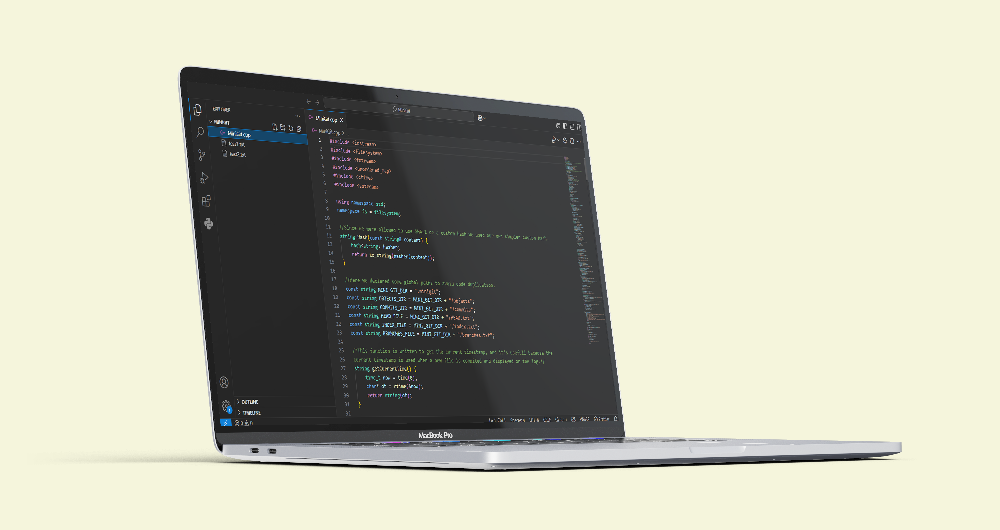

MiniGit

Roles:
- Group Leader
- Implemented the init and add "filename" features
Collaborators:
- Wengelle Yohannes
- Ezana Mulatu
- Samuel Abraham
- Wengelle Yohannes
Overview:
It's a simplified Git-like version control system built in C++. It allows users to track versions of files, make commits, manage branches, perform merges, and compare commits. All via command-line interaction and local file system operations.
Technology Stack:
- Language: C++
- CLI
- Hashing: Custom hash function
- Persistence: Store commit metadata and file blobs in local file system
Features:
- init - Initialize a MiniGit repository
- add "filename" - Stage a file for commit
- commit -m "message" - Save staged changes with a message
- log - View commit history
- branch "branchname" - Create a new branch
- checkout "branch/commit" - Switch to another branch or commit
- merge "branch" - Merge a branch into the current branch
- diff "commit1" "commit2" - Show differences between two commits
Development:
It was developed as a group project in Addis Ababa University to help better understand how real-world systems (like Git) are underpinned by DSA principles such as hashing, trees, DAGs, and file diffing.
Lessons Learned:
- Designed and implemented complex data structures (e.g., DAGs, trees).
- Understood how Git works under the hood.
- Command-line interface development.
- Experience software engineering practices like versioning, diffing, and merges.